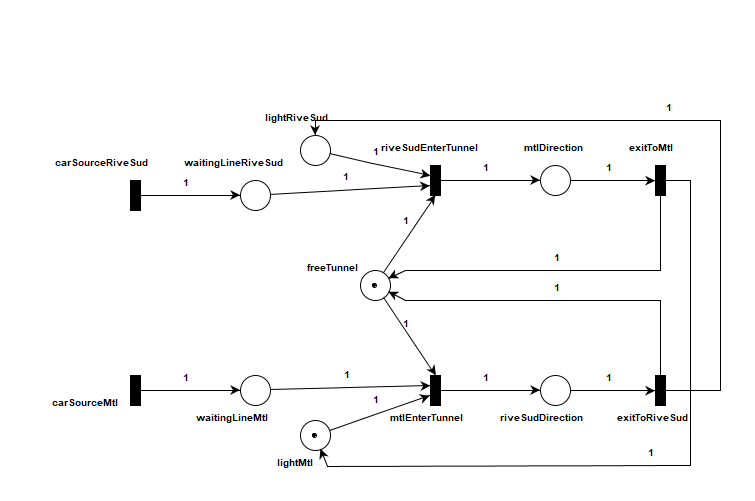

RÉSEAU DE PÉTRI
Photo

Analyse
Loi de conservation : un réseau de Pétri est conservateur pour un vecteur de pondération W si, pour tout marquage M accessible depuis l’état initial M0, la somme pondérée des jetons reste constante (diapo 45) :
∑ wi · M(pi) = K (constante)
Dans notre graphe, la loi de conservation apparaît au cœur du système, c’est-à-dire au niveau de l’accès au tunnel. Si l’on isole deux sous-ensembles d’états différents : Plibre (l'etat freeTunnel, lorsque le tunnel est vide) et Ptunnel (mtlDirection et riveSudDirection, lorsqu’une voiture est en train de traverser), la loi de conservation peut s’écrire sous la forme :
M(Plibre) + M(Ptunnel) = 1
Les simulations de notre réseau montrent que si le tunnel est occupé (M(Ptunnel) = 1), alors Plibre est nécessairement vide. En effet, le jeton a été pris par l’un des deux côtés du tunnel, ce qui permet à cette voie d’accueillir une voiture.
Une autre manière d’interpréter ce résultat, même si elle diffère légèrement de l’approche présentée dans le cours, consiste à voir le tunnel comme une « boîte noire » : le nombre de voitures qui entrent doit être égal au nombre de voitures qui en sortent. Rien ne se perd et rien ne se crée, les voitures ne font que circuler dans un flux, comme dans les réseaux de flots étudiés en recherche opérationnelle.
Par exemple, dans notre réseau, si l’on retirait les générateurs et que l’on plaçait initialement 5 voitures de chaque côté du tunnel, alors au final 5 voitures ressortiraient également de chaque côté.